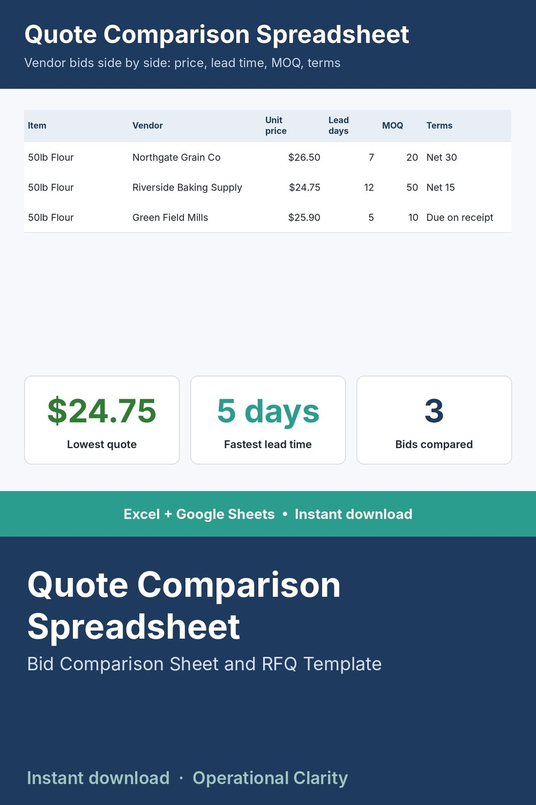

Quote Comparison Spreadsheet

Bid comparison sheet and RFQ template: compare supplier and contractor quotes side by side on price, lead time, MOQ and payment terms, with the lowest price and fastest lead time found automatically.
STOP AWARDING ON PRICE ALONE.
When you send the same request to three vendors, the lowest number on the page isn't always the best deal - lead time and minimum order quantity change the real math. This sheet puts every quote side by side so you can actually compare.
WHAT IT DOES
- Log every vendor's response to an RFQ: price, lead time, MOQ, payment terms
- Dashboard automatically finds the lowest quoted price and who offered it, plus the fastest lead time, for any item you type in
- Makes it obvious when the "cheap" quote isn't actually the best value
WHAT'S INCLUDED
- Excel file (.xlsx) - works in Excel 2010 and newer, no macros, no add-ins needed
- Start Here tab with plain-English setup instructions
- Sample data included so you can see it working before you enter your own numbers
WHO THIS IS FOR
Purchasing managers and small business owners who request quotes from multiple vendors and want a real comparison, not a pile of PDFs to eyeball.
INSTANT DOWNLOAD - no physical item will be shipped. Because this is a digital product, all sales are final.